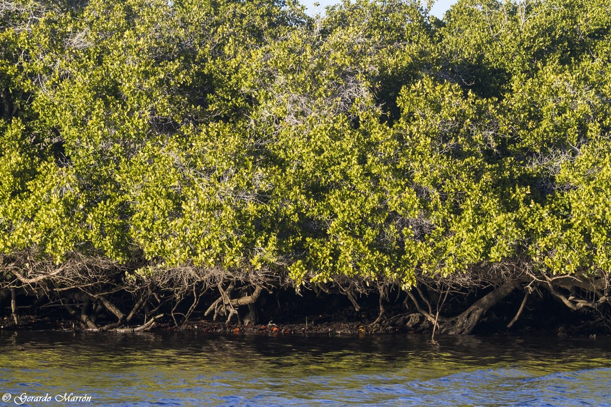
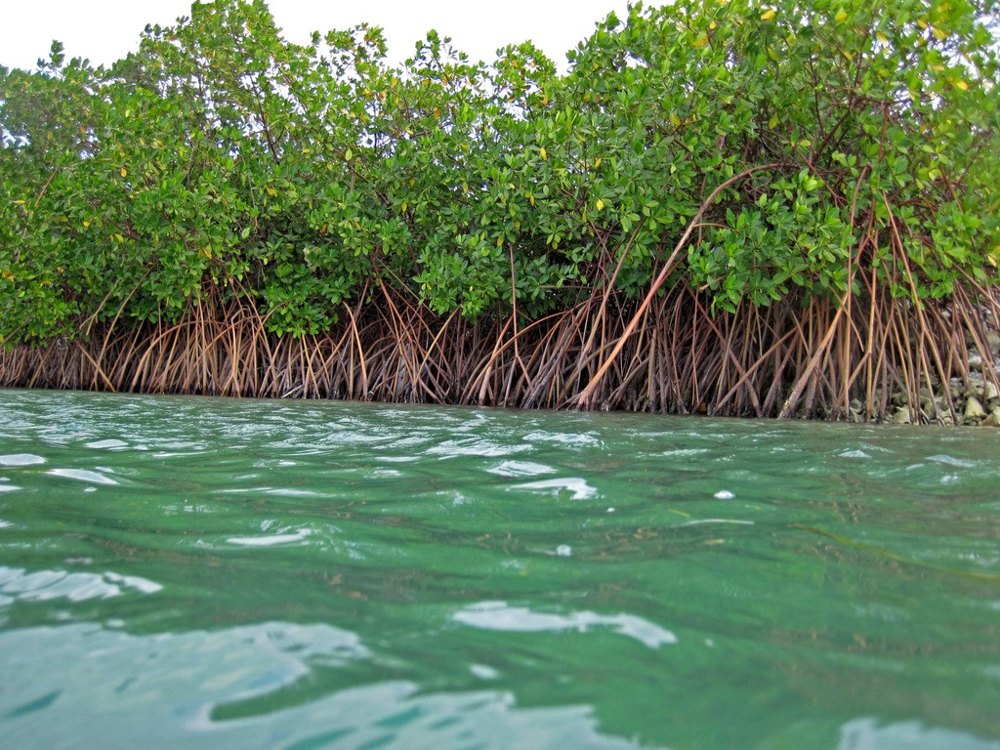
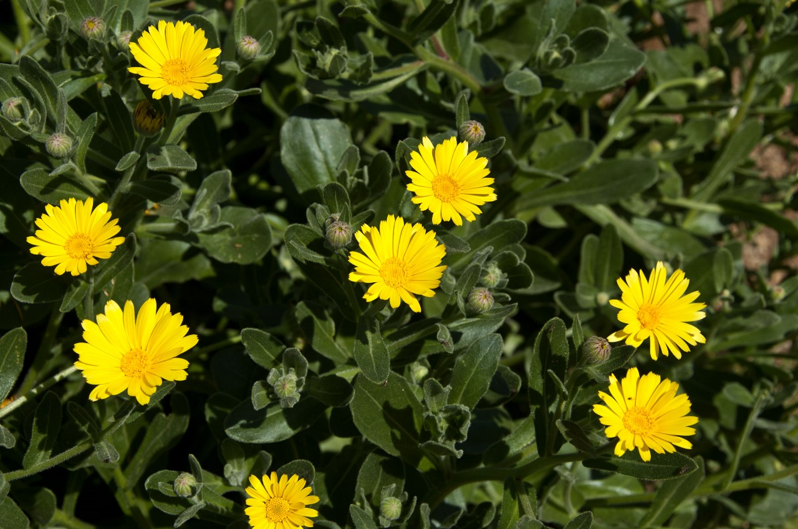

Mangle blanco (Laguncularia racemosa).
Esta especie puede crecer en forma de arbusto, o de árbol con una altura de entre 12 a 18 m. Puede desarrollar tanto raíces tabulares (de apoyo) como neumatóforos dependiendo de las condiciones de su hábitat. Se encuentra frecuente en manglares pantanosos a lo largo de las costas pacífica y atlántica; a una altitud de 0–10 ms.n.m.; florece y fructifica durante la mayor parte de año

Mangle rojo (Rhizophora mangle).
Es una especie adaptada a ambientes salinos y tolera mayor salinidad que los otros mangles y sirve de refugio a animales terrestres y acuáticos. Los árboles de Rhizophora mangle son de 4 a 10 metros de alto, su forma es de árbol o arbusto.

Caléndula marítima.
Crece en climas muy cálidos, pero muchas plantas han estado varadas todo el tiempo en las playas. La planta caléndula marítima es muy exuberante y crece en campos gruesos, son plantas con flores, produciendo hermosas flores de color amarillo parecidas a las plantas que se encuentran en la superficie del agua. Está considerada por la IUCN como una especie en peligro crítico de extinción y se encuentra incluida en la lista de las 50 especies botánicas más amenazadas del área mediterránea.

Halophila johnsonii.
Se encuentra en muchas lagunas, y ha estado en la lista de plantas marinas en peligro de extinción desde 1998. Esta hierba es una rica fuente de alimento para las tortugas marinas y otras especies marinas. Tiene como característica que es muy corta y densa. Este pasto marino se está muriendo poco a poco debido a la contaminación.